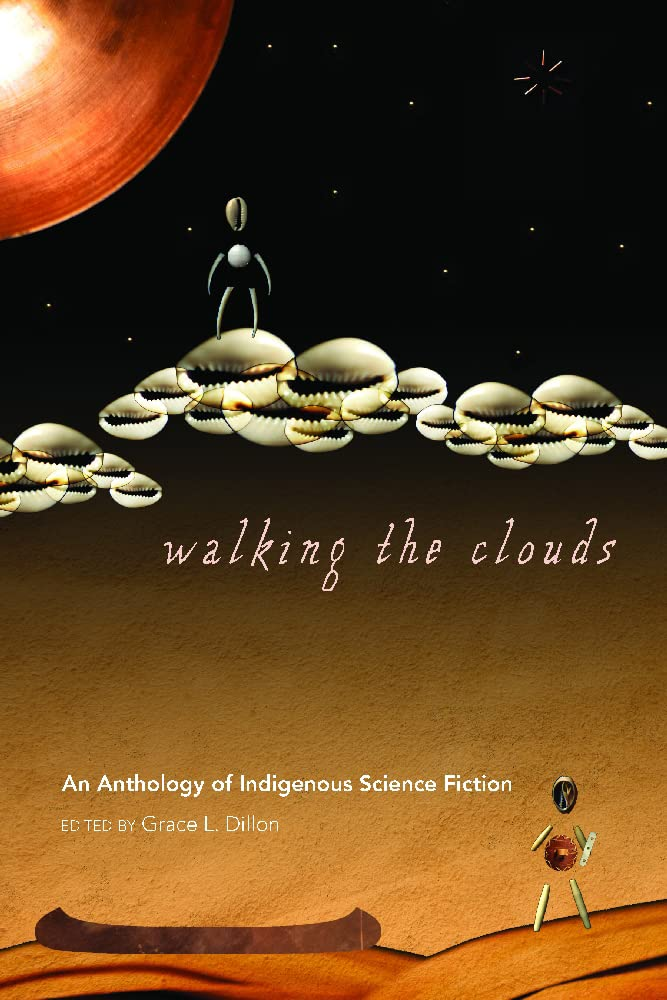

- 

Equity Library
The EDI committee (formerly Women in Physics) has put together a small library of books that address equity issues in Canada and the US, some focusing on science, others on society at large. We owe a special thanks to Auriane Canesse for seeing this project through from conception to reality and a thanks to Daryl Haggard and Nick Cowan for their extensive donations.The library has recently moved from the Rutherford lounge to a new bookshelf on the 2nd floor of Rutherford in front of the elevators. The instructions are simple: check out and read a book at a time, try not to hang on to it for more than a month, and return it. If you would like to suggest additional books or inquire about the status of a particular book, email our EDI Coordinators at edi.coord at physics.mcgill.ca.
This is a lending library, so please borrow books, read them at your leisure and bring them back when you're done. Most books contain trigger warnings on the inside cover, so you may check if you have sensitivity around the issues and themes discussed in the book prior to reading; however, we stress that these warnings may not be complete. Some books contain suggestions of additional titles to read for context.
Featured Reading
Titles in the library
- Notes on a Nervous Planet - Matt Haig
- Blind Spot: Hidden Biases of Good People - Mahzarin Banaji and Anthony Greenwald
- Exile & Pride: Disability, Queerness, and Liberation - Eli Clare
- First Woman (Graphic Novel) - NASA
- Du côté des petites filles/Little Girls: Social Conditioning and Its Effects on the Stereotyped Role of Women During Infancy - Elena Gianini Belotti
- Trauma and Recovery - Judith Herman
- Becoming - Michelle Obama
- The Souls of Black Folk - W.E.B. DuBois
- Makes Me Wanna Holler - Nathan McCall
- Black and White - Stephen Dorsey
- The Absolutely True Diary of a Part-Time Indian - Sherman Alexie
- Do Not Say We Have Nothing - Madeleine Thien
- On Beauty - Zadie Smith
- Ausat - Anne Panasuk
- Kuei, je te salue - Deni E Bechard, Natasha K. Fontaine
- Petit traité sur le racisme - Danny Laferrière
- Missoula, Rape and the Justice System in a College Town - Jon Krakauer
- There There - Tommy Orange
- Bridging Cultures - Glen Aikenhead and Herman Michell
- Stamped From the Beginning - Ibram X. Kendi
- Their Eyes Were Watching God - Zora Neale Hurston
- Normal Life - Dean Spade
- The Body Keeps the Score - Bessel Van der kolk
- Ma réserve dans ma chair - Mélanie Loisel
- Racialization, Crime and Criminal Justice in Canada - Chan and Chunn
- Charged - Emily Bazelon
- The Hanging of Angelique - Afua Cooper
- The Glass Universe - Dava Sobel
- Ungrading - Susan D. Blum
- Science and Social Inequality - Sandra Harding
- Royally Wronged - Constance Backhoouse, Cynthia Milton, Margaret Kovach and Adele Perry
- Equity in Science - Julie Posselt
- Walking the Clouds - Grace Dillon
- The Other Einstein - Marie Benedict
- A Lab of One's Own - Rita Colwell
- 21 Things you may not know about the Indian Act - Bob Joseph
- The Astronomer and the Witch - Ulinka Rublack
- Life Beyond: From Prison to Mars - ed. Charles Cockell
- LIfe Beyond 2: From Prison to the Moon - ed. Charles Cockell